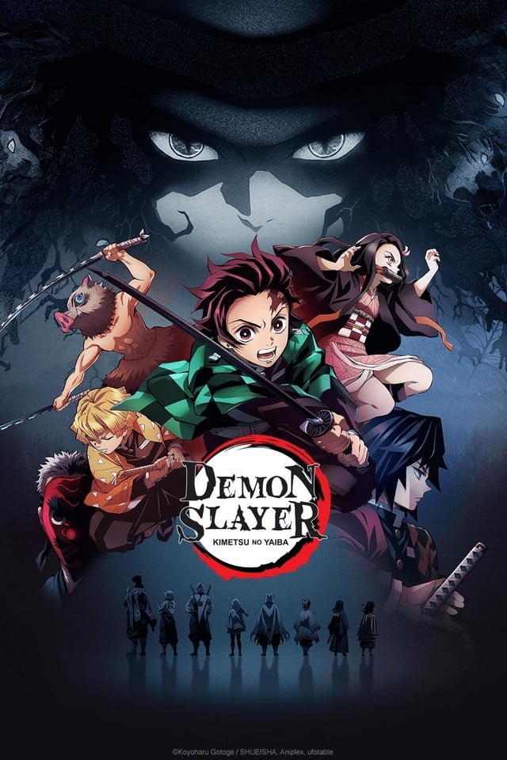

The Story of Demon Slayer
The beginning of this anime?
The story takes place in Taishō-era Japan. It follows Tanjiro Kamado and his sister Nezuko Kamado as they seek a cure for Nezuko's demon curse. Tanjiro and Nezuko become entangled in the affairs of a secret society, known as the Demon Slayer Corps, that has been waging a secret war against demons for centuries. The demons are former humans who sold their humanity in exchange for power. They feed on humans and possess supernatural abilities such as super strength, magic, and regeneration. Demons can only be killed if they're decapitated with weapons crafted from an alloy known as Sun Steel, injected with poison extracted from wisteria flowers, or exposed to sunlight. The Demon Slayers, on the other hand, are entirely human; however, they employ special breathing techniques, known as "Breathing Styles", which grant them superhuman strength and increased resistance.
The subject of this anime?
Tanjiro Kamado is a kind-hearted and intelligent boy who lives with his family in the mountains. He has become his family's breadwinner after his father's death, making trips to the nearby village to sell charcoal. Everything changes when he comes home one day to discover that his family has been attacked and slaughtered by a demon. Tanjiro and his sister Nezuko are the sole survivors of the incident, with Nezuko being transformed into a demon, but still surprisingly showing signs of human emotion and thought. After an encounter with Giyū Tomioka, a demon slayer, Tanjiro is recruited by him and sent to be taught by Sakonji Urokodaki, another member of the Demon Slayer Corps, to also become a demon slayer, and begins his quest to help his sister turn human again and avenge the deaths of the rest of his family.